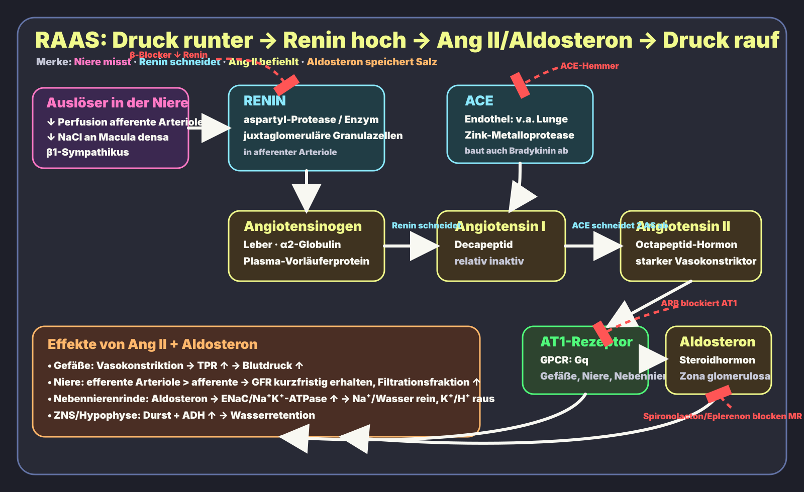

Renin kommt aus der Niere
JG-Zellen
Juxtaglomeruläre Zellen [juxtaglomeruläre Granulazellen] in der Wand der afferenten Arteriole. Freisetzung bei ↓ Druck, ↓ NaCl an Macula densa oder β1-Sympathikus.
Physiologie · Niere · Endokrinologie · High Yield
Wenn effektives Blutvolumen oder Nierendruck fällt: Niere setzt Renin frei → Angiotensin II macht Druck → Aldosteron spart Salz.
Hier ist die prüfungsrelevante Kette: wo Renin entsteht, welche Moleküle Enzyme/Peptide/Steroide sind, wo sie binden, welche Effekte sie haben und wo Medikamente eingreifen.
Das Diagramm trennt Enzyme, Hormone/Vorläufer, Rezeptoren und Effekte. Wichtig: Renin ist ein Enzym, Angiotensinogen ist ein Leber-Protein, Angiotensin II ist das zentrale Peptidhormon, Aldosteron ist ein Steroidhormon.

JG-Zellen
Juxtaglomeruläre Zellen [juxtaglomeruläre Granulazellen] in der Wand der afferenten Arteriole. Freisetzung bei ↓ Druck, ↓ NaCl an Macula densa oder β1-Sympathikus.
Protease
Renin spaltet Angiotensinogen zu Angiotensin I. Es ist kein Steroidhormon und kein Rezeptor.
AT1: Gq
Angiotensin II bindet v. a. an den AT1-Rezeptor [GPCR, Gq] → Vasokonstriktion, Aldosteron, ADH/Durst, proximale Na⁺-Rückresorption.
Na⁺ rein, K⁺/H⁺ raus
Steroidhormon aus der Zona glomerulosa. Bindet intrazellulären Mineralokortikoid-Rezeptor im Sammelrohr → ENaC/Na⁺K⁺-ATPase ↑.
Die Niere ist der Sensor: afferenter Druck, Macula-densa-NaCl und β1-Sympathikus entscheiden über Renin. Ang II und Aldosteron wirken dann an Gefäßen, Nebenniere, ZNS und Tubulus.

| Baustein | Was ist es? | Quelle / Ort | Bindung / Ziel | High-Yield Effekt |
|---|---|---|---|---|
| Renin | Enzym; Aspartyl-Protease | Juxtaglomeruläre Granulazellen der afferenten Arteriole | spaltet Angiotensinogen | Startet RAAS bei ↓ Nierendruck, ↓ NaCl, β1-Sympathikus |
| Angiotensinogen | Plasma-Vorläuferprotein; α2-Globulin | Leber | Substrat von Renin | wird zu Angiotensin I |
| Angiotensin I | Decapeptid; relativ inaktiv | aus Angiotensinogen durch Renin | Substrat von ACE | Vorstufe von Angiotensin II |
| ACE | Zink-Metalloprotease / Dipeptidylcarboxypeptidase | Endothel, klassisch Lunge; auch Niere/Gefäße | Ang I → Ang II; Bradykinin-Abbau | ACE-Hemmer: ↓ Ang II, ↑ Bradykinin → Husten/Angioödem |
| Angiotensin II | Octapeptid-Hormon | aus Ang I durch ACE | AT1-Rezeptor (GPCR, Gq); AT2 weniger prüfungszentral | Vasokonstriktion, Aldosteron ↑, ADH/Durst ↑, proximale Na⁺-Rückresorption ↑ |
| AT1-Rezeptor | Gq-gekoppelter GPCR | Gefäßmuskel, Niere, Nebennierenrinde, ZNS | bindet Ang II | Ca²⁺/IP3/DAG-Signal → Vasokonstriktion und Aldosteron-Stimulation |
| Aldosteron | Steroidhormon / Mineralokortikoid | Zona glomerulosa der Nebennierenrinde | intrazellulärer Mineralokortikoid-Rezeptor | Hauptzellen: ENaC/Na⁺K⁺-ATPase ↑; α-Schaltzellen: H⁺-Sekretion ↑ |
| ANP/BNP | Peptidhormone | Vorhof/Ventrikel bei Dehnung | Natriuretische Peptid-Rezeptoren | Gegenspieler: Natriurese, Vasodilatation, Renin/Aldosteron ↓ |
| Stelle | Beispiel | Mechanismus | Prüfungsfalle |
|---|---|---|---|
| β1 an JG-Zellen | β-Blocker | Reninfreisetzung ↓ | Sympathikus stimuliert Renin über β1, nicht α1. |
| Renin | Aliskiren | direkter Renin-Inhibitor | Kontraindikationen/Interaktionen ähnlich RAAS-Blockade beachten. |
| ACE | ACE-Hemmer: Ramipril, Enalapril | Ang II ↓, Bradykinin ↑ | Husten/Angioödem; kontraindiziert in Schwangerschaft; Kreatinin/K⁺ kontrollieren. |
| AT1 | ARB/Sartane: Losartan, Valsartan | blockiert AT1-Rezeptor | weniger Bradykinin-Husten als ACE-Hemmer; trotzdem Hyperkaliämie/Schwangerschaftsverbot. |
| MR/Aldosteron | Spironolacton, Eplerenon | Mineralokortikoid-Rezeptor-Antagonisten | Hyperkaliämie; Spironolacton antiandrogen → Gynäkomastie. |
Frage: Ein Patient mit bilateraler Nierenarterienstenose erhält einen ACE-Hemmer und entwickelt einen Kreatininanstieg. Welche RAAS-Wirkung wurde blockiert?
Antwort: Angiotensin II konstrigiert bevorzugt die efferente Arteriole und hält so den glomerulären Filtrationsdruck aufrecht. ACE-Hemmung nimmt diese efferente Konstriktion weg → GFR fällt.
Selbst gezeichnete Lernschemata, nicht maßstabsgetreu. Für prüfungsnahe Details zu Medikamenten/Kontraindikationen immer mit Kurs/AMBOSS/Via Medici abgleichen.
StatPearls: Physiology, Renin Angiotensin System · StatPearls: ACE Inhibitors · OpenStax: Electrolyte Balance / RAAS